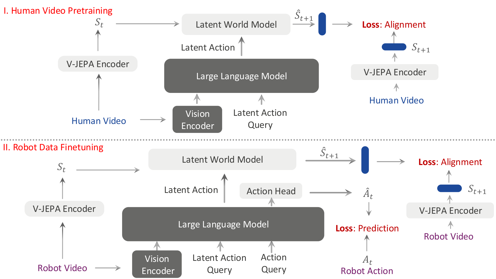
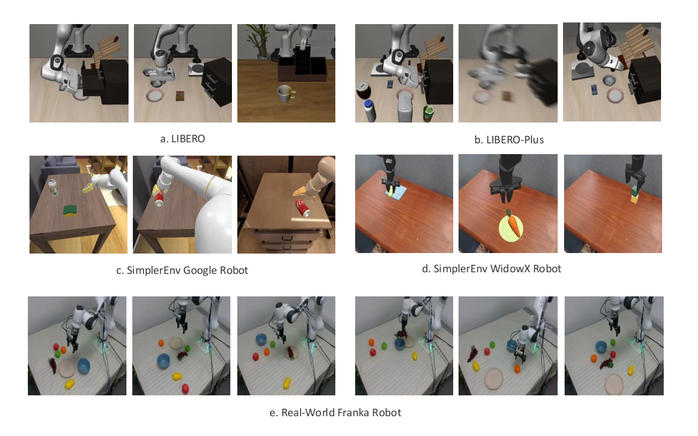
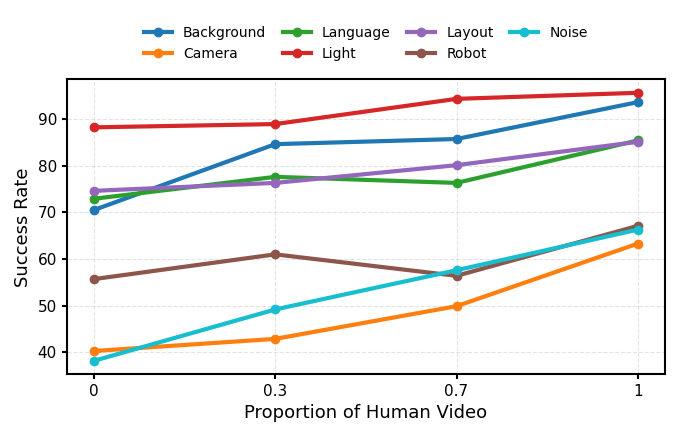
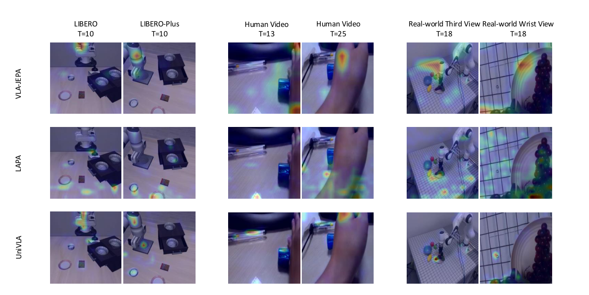
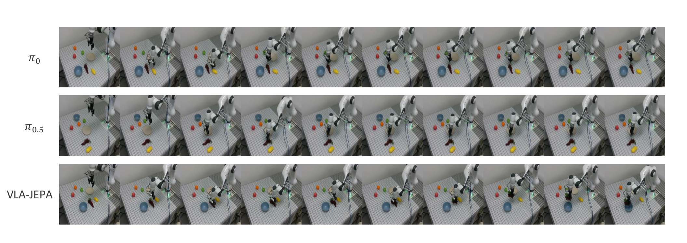

VLA-JEPA: Enhancing Vision-Language-Action Model with Latent World Model
1. 论文速览与证据链
一句话贡献
VLA-JEPA 用冻结 target encoder 生成未来 latent 监督，学生只看当前观测，通过无信息泄漏的状态预测学习动作相关动态，再与 flow-matching 动作生成联合训练。
元数据与阅读定位
| 技术类型 | JEPA latent world-model pretraining |
|---|---|
| 关键词 | VLA-JEPA、V-JEPA2、latent world model、leakage-free prediction、Qwen3-VL、flow matching、LIBERO-Plus、SimplerEnv |
| 开源情况 | 代码、项目页和 Hugging Face 页面由论文给出 |
| 适合程度 | 很高：提供不看未来输入、仅在 latent space 预测未来状态的替代路线 |
从哪里开始读
Qwen3-VL 是 VLM 骨干，当前帧与任务进入学生路径，future frames 只进入冻结 V-JEPA encoder 形成 target。learnable latent/action tokens 通过 time-causal attention 汇聚转移信息；机器人数据再增加 flow-matching action expert。总损失联合 latent world-model 与动作生成目标。 阅读时先确认中间表示是否在部署端运行，再用主结果和消融判断它究竟改善了感知、动态预测还是动作生成。
图表证据链
| # | 原始图 | 支持的主张与边界 |
|---|---|---|
| 1 | 无泄漏 JEPA 训练架构 | future image 仅流向冻结 target encoder，current observation 流向 VLA student；两条路径在 latent prediction loss 汇合。 |
| 2 | 四类评测环境 | 图中并列 LIBERO、LIBERO-Plus、两种 SimplerEnv 和真实 Franka，显示结果覆盖仿真扰动与真实平台。 |
| 3 | 人类视频比例消融 | 不同扰动维度随人类视频占比变化，收益主要集中在分布变化而非标准任务。 |
| 4 | latent token 注意力 | 注意力图显示 token 聚焦动作相关区域而非均匀背景，是表示可解释性的辅助证据，但不是因果证明。 |
| 5 | 真实机器人 rollout | 序列帧展示 ID/OOD 操作过程，支撑策略可执行性；任务数和物体种类仍有限。 |
2. 问题与动机
问题定义
从视频学动作常把 future frame 直接作为输入或重建目标，容易泄漏未来信息，并追逐相机运动和纹理变化。VLA-JEPA 把目标改为预测冻结 future encoder 的 state representation，让当前观测产生的 latent action 只承担可预测状态转移。
现有路线为何不足
LAPA/UniVLA 等 latent-action 管线通常经历 tokenizer、VLA 预训练和动作适配多个阶段；JEPA 路线来自表征预测而非像素生成。本文把 V-JEPA2 作为 world-state target，并在同一 VLA 中兼容无动作人类视频和有动作机器人示范。
作者的解题假设
VLA-JEPA 用冻结 target encoder 生成未来 latent 监督，学生只看当前观测，通过无信息泄漏的状态预测学习动作相关动态，再与 flow-matching 动作生成联合训练。 该假设只有在统一骨干、数据和评测下仍带来增益时才成立。
4. 方法、表示与训练
端到端信息流
Qwen3-VL 是 VLM 骨干，当前帧与任务进入学生路径，future frames 只进入冻结 V-JEPA encoder 形成 target。learnable latent/action tokens 通过 time-causal attention 汇聚转移信息；机器人数据再增加 flow-matching action expert。总损失联合 latent world-model 与动作生成目标。
核心表示
latent token 对应相邻状态转移，而不是一张 future image。target encoder 的语义空间抑制背景和像素噪声；因果 mask 确保 token 在预测时不能访问被预测的未来。这个约束是与常见 IDM-FDM 方案最关键的差别。
训练阶段与目标
无动作预训练使用 Something-Something-v2 的 22 万人类视频；有动作预训练使用 DROID 7.6 万条示范。LIBERO 微调约 2K expert demonstrations，SimplerEnv 分别用 Fractal 与 BridgeV2；所有实验使用 8×A100。
推理与部署路径
推理只运行当前观测的 VLM 与 action expert，不需要 future target encoder。latent token 在训练中塑造 backbone，动作 expert 通过 flow matching 生成连续 action chunk，因此额外延迟主要来自 token 与动作头，而非视频 rollout。
无泄漏 JEPA 训练架构

四类评测环境

5. 实验、结果与消融
数据集、任务与协议
评测包含 LIBERO、七类扰动的 LIBERO-Plus、Google/WidowX SimplerEnv 和真实 Franka。LIBERO 每任务 50 episode、每 suite 500 episode；真实数据为三个任务共 100 条示范，并区分 ID/OOD。
主要定量结果
LIBERO 平均成功率 97.2%，高于 π0.5 的 96.9%，LIBERO-Long 达 95.8%；去掉人类视频仍有 96.1%。论文在 LIBERO-Plus 七类扰动中取得五类最优，Google Robot 平均领先，WidowX 为第二。
消融与因果解释
人类视频在标准 LIBERO 和 SimplerEnv 上并非决定性，甚至部分 real-to-sim 任务中高质量 robot expert 更重要；但在 LIBERO-Plus 的 language、light、background、layout 扰动上收益明显。该消融把“动作技能学习”和“视觉鲁棒性增强”区分开。
证据没有覆盖什么
从当前评测覆盖看，结果不能证明 JEPA latent 等价于真实可控动作；标准 LIBERO 上人类视频收益较小，说明表示质量仍依赖 robot expert。真实实验规模有限，且 Qwen3-VL/V-JEPA2 双骨干使模型较重。
人类视频比例消融

latent token 注意力

真实机器人 rollout

6. 复现路径与工程风险
最小可行复现
最小复现先冻结 V-JEPA2 target encoder，在 LIBERO 上验证因果 latent prediction，再接 flow-matching action expert。必须检查 future frame 未进入 student 输入，并复刻 human-video on/off；数据下载、8×A100 和多 benchmark 评测是成本中心。
验收标准
LIBERO 平均成功率 97.2%，高于 π0.5 的 96.9%，LIBERO-Long 达 95.8%；去掉人类视频仍有 96.1%。论文在 LIBERO-Plus 七类扰动中取得五类最优，Google Robot 平均领先，WidowX 为第二。 复现时至少应恢复相同方向的增益，并报告同一随机种子、数据规模和延迟预算。
复现风险清单
| 环节 | 具体风险 |
|---|---|
| 数据 | 需取得论文列出的训练数据、相同切分与时间同步；未公开数据必须单列。 |
| 模型 | 需固定视觉/VLM 骨干、tokenizer 与动作头，避免把模型规模差异误判为方法收益。 |
| 训练 | 按论文阶段顺序复现，并保留无 latent/world objective 的严格对照。 |
| 评测 | 同时复现主指标、消融和失败类型；开环结果不能替代闭环安全。 |
| 硬件 | 最小复现先冻结 V-JEPA2 target encoder，在 LIBERO 上验证因果 latent prediction，再接 flow-matching action expert。必须检查 future frame 未进入 student 输入，并复刻 human-video on/off；数据下载、8×A100 和多 benchmark 评测是成本中心。 |
7. 分析、局限与边界
最有价值的贡献
综合方法与实验证据，VLA-JEPA 用冻结 target encoder 生成未来 latent 监督，学生只看当前观测，通过无信息泄漏的状态预测学习动作相关动态，再与 flow-matching 动作生成联合训练。
作者结论的适用边界
将结论外推前需要保留以下边界：结果不能证明 JEPA latent 等价于真实可控动作；标准 LIBERO 上人类视频收益较小，说明表示质量仍依赖 robot expert。真实实验规模有限，且 Qwen3-VL/V-JEPA2 双骨干使模型较重。
可信的后续实验
用于自动驾驶时，可用冻结 driving foundation encoder 产生未来 BEV/scene latent target，当前多相机观测预测该 target，再由 planner 输出轨迹；关键消融应比较 pixel future、BEV future 与 semantic latent future 的闭环收益和延迟。
8. 组会问答与阅读结论
Q1. 如何保证没有未来泄漏？
A：future frame 只进入冻结 target encoder，学生路径和推理路径只看当前及历史观测。
Q2. 为何不重建像素？
A：像素目标会强调相机和纹理变化，latent target 更接近语义状态转移。
Q3. 人类视频是否必需？
A：标准任务上不是；对 LIBERO-Plus 外观和语言扰动更有价值。
Q4. 主要数字是什么？
A：LIBERO 平均 97.2%，去掉人类视频 96.1%，并在 LIBERO-Plus 五类扰动最优。
Q5. 部署还需 world model 吗？
A：不需 future target encoder；训练后的 VLM 与 action expert 直接生成动作。
我的阅读笔记
结合本批论文的比较，我的后续关注点是：用于自动驾驶时，可用冻结 driving foundation encoder 产生未来 BEV/scene latent target，当前多相机观测预测该 target，再由 planner 输出轨迹；关键消融应比较 pixel future、BEV future 与 semantic latent future 的闭环收益和延迟。